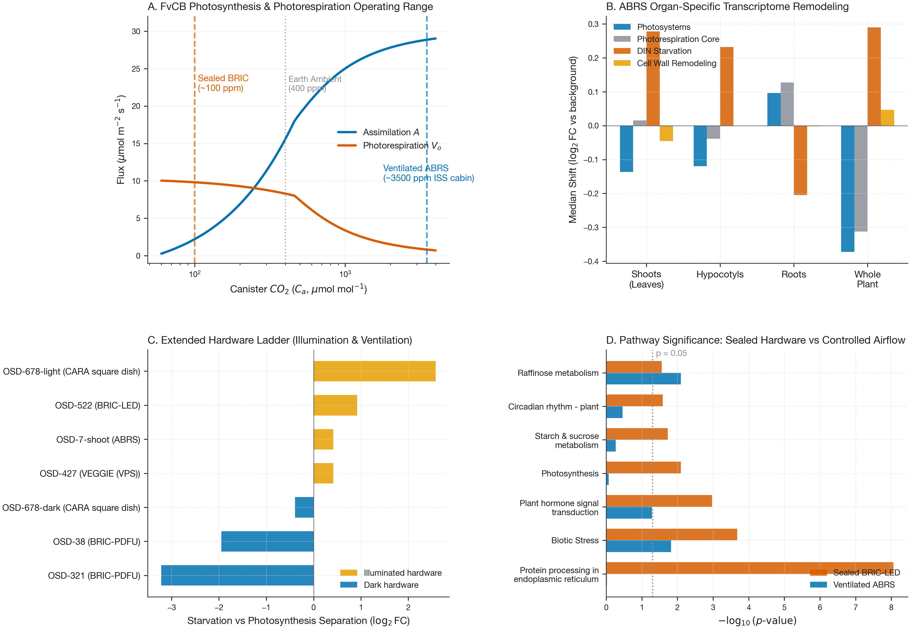

CoSE · plant spaceflight biology
Plants flown on the ISS grow inside enclosures, and almost nobody measures the atmosphere inside them. A validated gas-transport model says an illuminated sealed canister draws itself down to the CO2 compensation point within minutes — in the ground control as much as in flight, which is exactly why it disappears from the contrast that gets published.
Everything below runs in your browser. The model is the same code that produced the figures, ported to JavaScript and checked against the Python to 1e-6.
A Farquhar–von Caemmerer–Berry C3 model with the Rubisco oxygenation term explicit, solved for the supply-equals-demand operating point. Boundary-layer conductance gbl comes from LunarLeaf-CFD; everything else is yours to move.
We expected microgravity's boundary-layer penalty to amplify as CO2 ran out. Set canister CO2 high, note the gap between the two gravity traces below, then drag it down to 70. The gap closes: with no assimilation there is no flux across the boundary layer, so there is nothing for gravity to impede.
From LunarLeaf-CFD, a validated lattice-Boltzmann solver. All runs are in microgravity, so the differences here are hardware, not gravity.
The seven-minute drawdown in a lit BRIC canister is a mass balance between photosynthetic uptake and enclosure volume. It is therefore essentially gravity-independent — it happens in the ground control too, and cancels out of flight-versus-ground.
Non-significant points are subsampled so the page stays quick — but every member of every gene set and pathway is forced into the plot regardless of significance, so highlighting always shows the whole set. A feature can still be measured without being plottable: a volcano needs a y-value, and DESeq2's independent filtering leaves some transcripts with a fold change but no adjusted p. The caption says when that happens.
Median shift against all other genes, per set, per study. Blue is down in flight, red is up, white is no change. Click any row to highlight that set in the volcano above. Hover a cell for n, shift and p.
PaintOmics, organism ath, KEGG + MapMan, all three layers. Of 232 pathways, 32 reach combined p < 0.05 — and glyoxylate and dicarboxylate metabolism, the photorespiration map, ranks 214th of 232, in the bottom 8 %, the least enriched of any pathway the model made a claim about.
The least circular result available: the compounds are predicted, but the differentially expressed genes counted around them are measured.
The model predicted an ordering across enclosure types. Illumination separated the studies perfectly; the enclosure gradient did not. Both are shown.
Direct comparison between sealed canisters (BRIC-LED, OSD-522) and actively ventilated flight chambers (ABRS, OSD-7 transcriptomics & OSD-16 proteomics) on the International Space Station. Active ventilation with cabin air resolves genuine microgravity adaptations from enclosed hardware artifacts.
Elevated ISS cabin CO2 saturates Rubisco ($C_c = 3{,}160.5$ ppm), collapsing the photorespiratory oxygenation fraction from 53.7% down to 2.6% and dropping photorespiratory flux 12-fold ($9.81 \to 0.83\ \mu\mathrm{mol\,m^{-2}\,s^{-1}}$).
Protein processing in endoplasmic reticulum, the top enriched pathway in sealed BRIC-LED ($p = 8.65\times 10^{-9}$), disappears completely in ventilated ABRS ($p = 0.9456$). The unfolded protein response is triggered by trapped volatiles, ethylene, and CO2 starvation in sealed canisters.
Biotic Stress ($p = 0.0151$ in ABRS; $p = 2.10\times 10^{-4}$ in BRIC-LED), Raffinose oligosaccharide metabolism ($p = 0.0081$), and light-harvesting complex repression ($p = 6.58\times 10^{-6}$) are robustly conserved across sealed and ventilated hardware.
Across 7 independent flight experiments, both ventilated platforms—VEGGIE RNA-seq and ABRS microarray—converge on an identical separation from dark controls: $\Delta_{\mathrm{VEGGIE}} = +0.4142$ vs $\Delta_{\mathrm{ABRS}} = +0.4146$.

| DB | Pathway | BRIC-LED $p$ | ABRS $p$ | ABRS Dir | Classification |
|---|---|---|---|---|---|
| KEGG | Protein processing in endoplasmic reticulum | 8.65e-9 | 0.9456 | Flat | Hardware artifact (volatiles / starvation) |
| MapMan | Cellular response overview | 2.33e-6 | 0.6111 | Down | Hardware artifact |
| MapMan | Biotic Stress | 2.10e-4 | 0.0151 | Up | Conserved microgravity response |
| KEGG | Glucosinolate biosynthesis | 6.02e-4 | 0.8453 | Up | Hardware artifact |
| KEGG | Plant hormone signal transduction | 0.0011 | 0.0516 | Up | Borderline conserved |
| KEGG | Photosynthesis | 0.0080 | 0.8512 | Down | Hardware-modulated |
| KEGG | MAPK signaling pathway | 0.0094 | 0.2322 | Up | Hardware-modulated |
| KEGG | Starch and sucrose metabolism | 0.0186 | 0.5428 | Down | Hardware-modulated |
| KEGG | Photosynthesis - antenna proteins | 0.0217 | 1.0000 | Down | Hardware-modulated |
| MapMan | Raffinose metabolism | 0.0274 | 0.0081 | Up | Conserved microgravity response |
| KEGG | Carbon fixation by Calvin cycle | 0.1420 | 0.0074 | Up | ABRS-specific (CO2 saturated) |
| KEGG | Cysteine and methionine metabolism | 0.2110 | 0.0015 | Down | ABRS-specific |
The complete manuscript and supplementary information incorporating both BRIC-LED and ABRS analyses are available in both PDF and Word (.docx) formats: